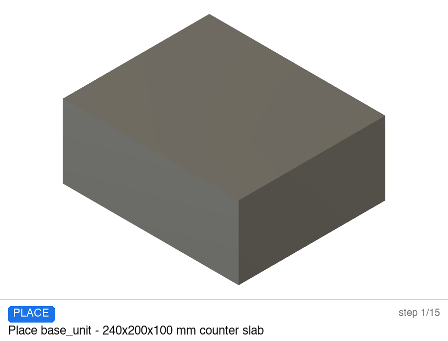
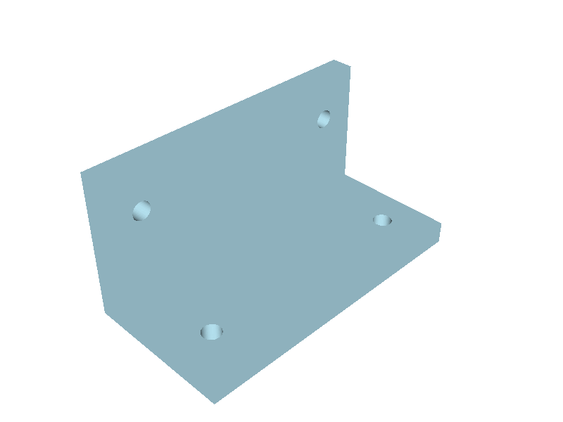
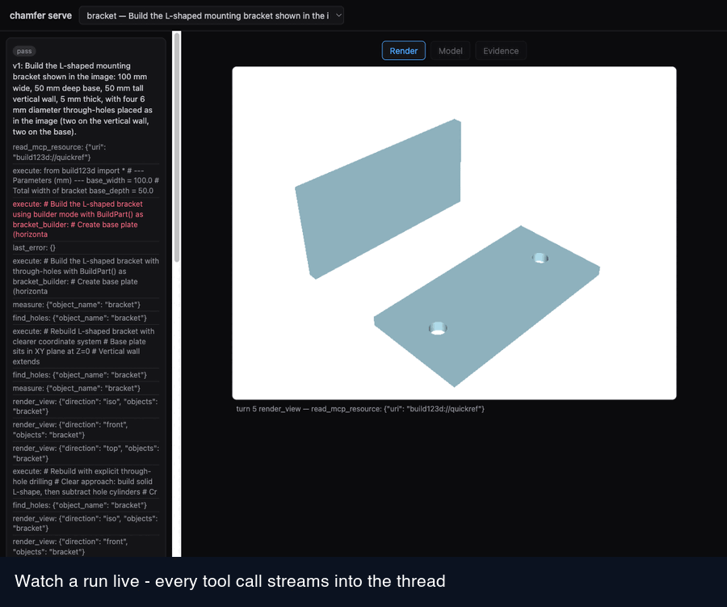
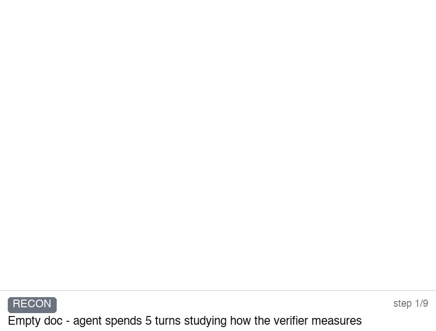
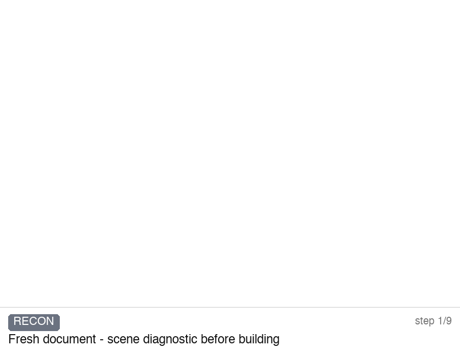
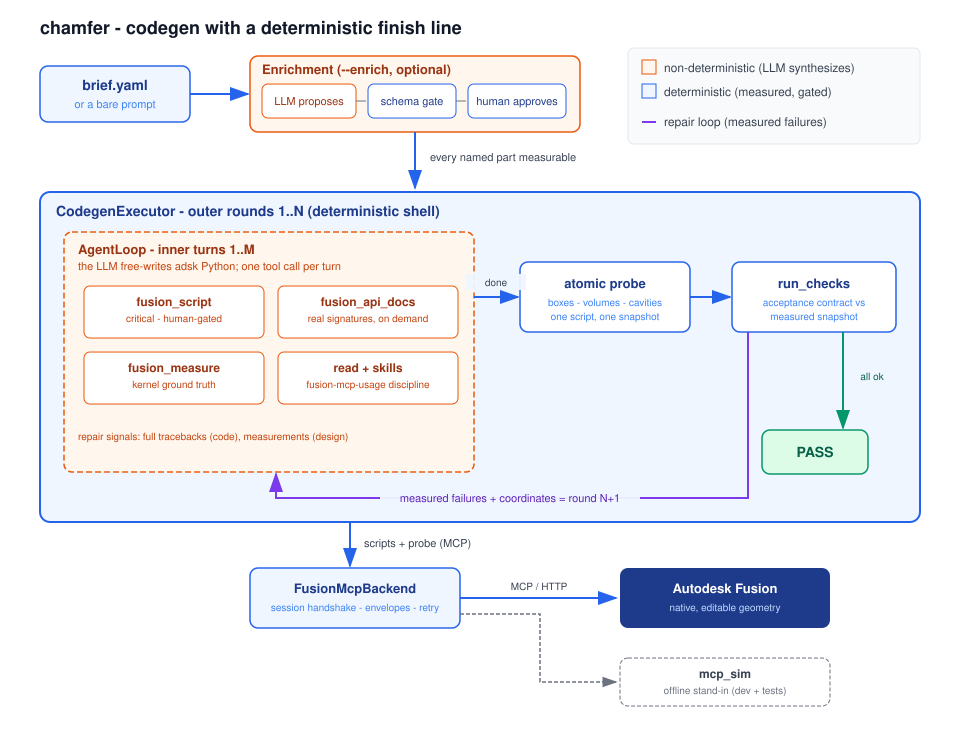

A small, plain-Python agent harness. The LLM drives an external CAD MCP server to build a part from your prompt or reference image — then a deterministic kernel verifier decides PASS, never the model's own word.

Attach reference images with --image: a requirements stage
first describes each image in CAD-engineering terms, and during the build the agent compares its own
renders against your photos — while the kernel checks every number.

--image run: reference in, bracket built step by step, every boolean confirmed by
kernel measurement, all four through-holes counted by find_holes — then the verify gate re-measures
the exported STEP with no LLM involved.chamfer servenewEvery run writes a full per-turn event log; chamfer serve is a
local web app over it. Start runs from a composer, watch the thread live next to a 3D canvas, scrub back
through every step, and read the acceptance checks on the Evidence tab. Give runs a session id and
follow-ups become edits of the last verified part — every version stays replayable.

session.jsonl: the scrubber walks the run's actual steps;
the Evidence tab shows what the verifier measured, check by check.Each GIF is a script-for-script replay of a real session log — actual geometry states, not illustrations. (These runs are from an earlier Fusion-backed version; the current release drives an external build123d MCP server through the same measured loop.)


